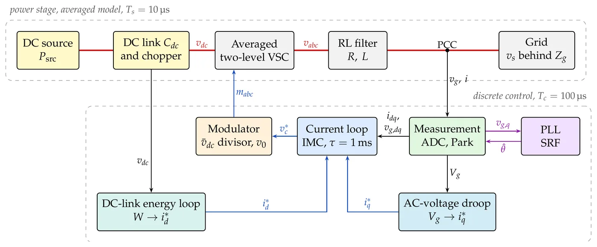
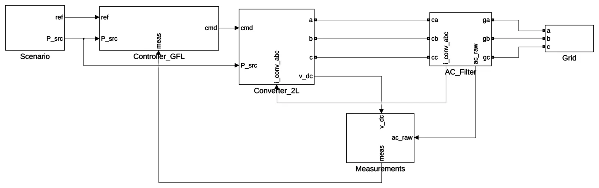

CITCEA-UPC · Barcelona
Grid-connected converter control
I am building a grid-connected voltage-source converter in MATLAB/Simulink one stage at a time: a two-level converter with grid-following control first, then grid-forming control, and later a modular multilevel converter (MMC). Most results are checked against a prediction computed without the model.
- Status
- In progress: the grid-following stage is built and verified
- Type
- Individual project, since Sep 2026
- Converter
- Two-level VSC: 400 V, 10 kVA, 800 V DC
- Control
- SRF-PLL, IMC current loop (τ = 1 ms), DC-link energy loop, Q–V droop
- Tools
- MATLAB/Simulink, Simscape Specialized Power Systems
- The 25 Hz SRF-PLL follows its linear design through a 30° phase jump to within this share of the step
- 0.74 %
- Settling time of the IMC current loop, which matches its exact sampled-data prediction to 3 × 10−9 A
- 3.4 ms
- Weakest grid (X/R = 10) at which the first model stayed synchronised with the 25 Hz PLL, in the tested cases; not a rated-power result
- SCR 1.3
- DC-link voltage held by the DC chopper during balanced sags at rated power
- 865 V


Results
- Inner control. The 25 Hz SRF-PLL follows its linear design through a 30° phase jump to 0.74 % of the step. The IMC current loop matches the exact sampled-data prediction to 3 × 10−9 A and settles in 3.4 ms; the full model reproduces it to 0.5 %.
- Weak grid. With the 25 Hz PLL, the first model (ideal DC source, SPWM) stayed synchronised under a rated d-axis current reference down to SCR 1.3 (X/R = 10), in the tested cases; a faster PLL needs a stronger grid. Its exported power falls with the PCC voltage, so this is not a rated-power result.
- DC link. An energy loop with source-power feed-forward, and a current limit applied as a power, holds the DC voltage with the DC and AC sides coupled both ways. The rated step peaks within 1 V of the linear loop.
- AC voltage. A filtered Q–V droop, stable down to SCR 1.3 at reduced power and well inside a 1 s response target.
- Grid conditions. In balanced sags a DC chopper holds the link at 865 V at rated power. A deep-fault profile is ridden through on a stiff grid; at SCR 5 the converter loses synchronism.


What I took from it
- A match is a verification only once every omission is accounted for. An early DC-link prediction agreed with the model to 0.3 V, but only because two errors of opposite sign cancelled.
- Sampling sets the fine detail. The one-sample computation delay alone costs 9.5 % of a current step and causes the 1.96 % coupling between the axes.
- On a weak grid the converter measures itself. The PLL follows a PCC voltage that its own current moves, so the PLL and the droop both need slower dynamics as the grid weakens.
- Some failures are not tuning problems. In the deep fault at SCR 5 this grid-following baseline loses synchronism. Whether grid-forming control does better under the same plant, energy and current limits is what the next stage tests.
Next
Grid-forming control on the two-level converter, evaluated on weak and low-inertia grids, then a modular multilevel converter with an averaged-arm model and the same grid-forming control. Grid-forming control of the MMC is a planned extension, to be completed before the thesis.